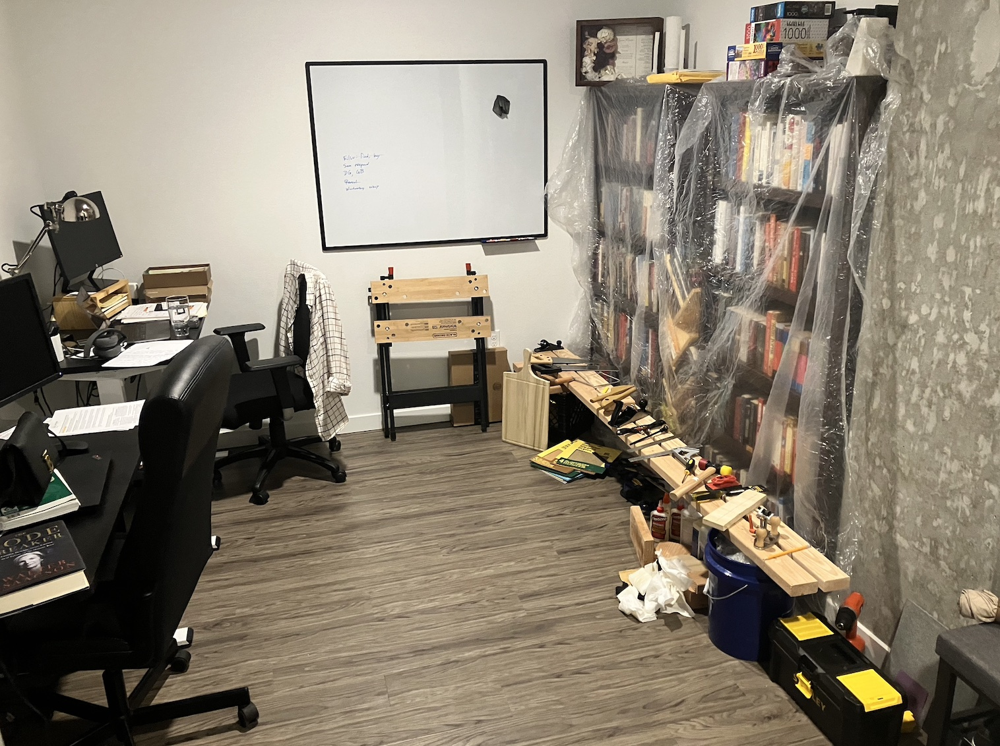
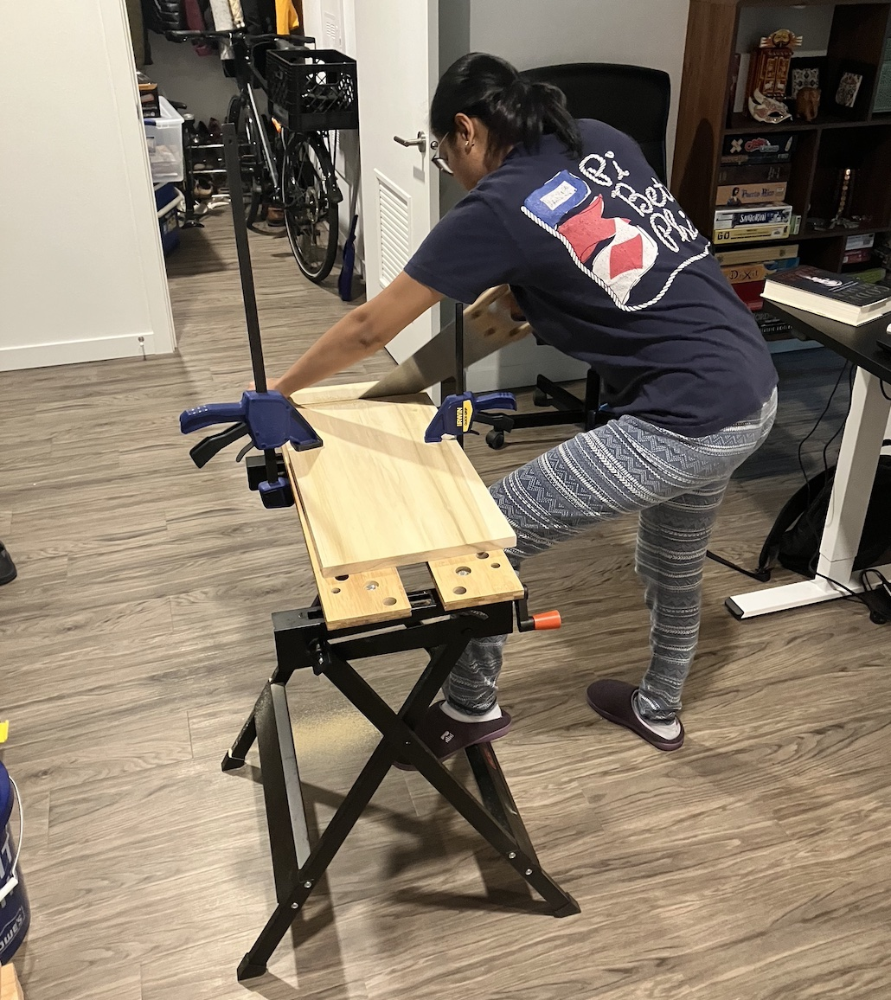
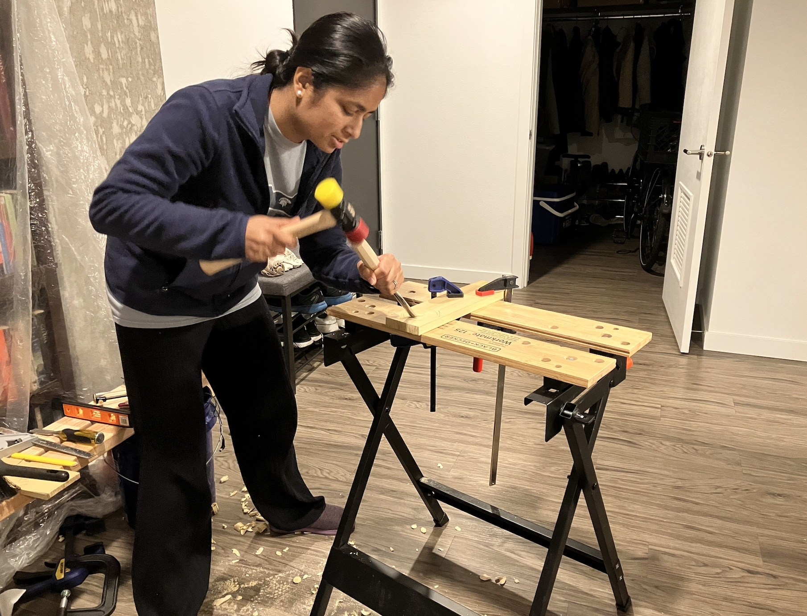
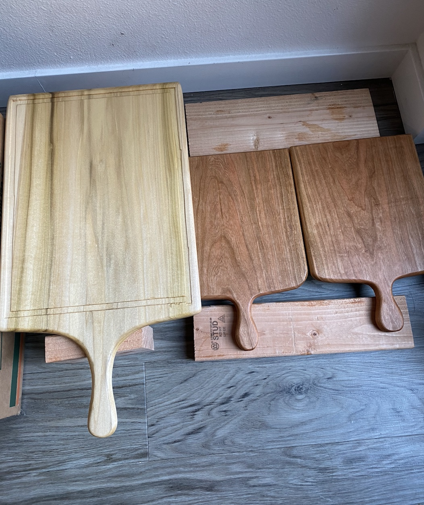
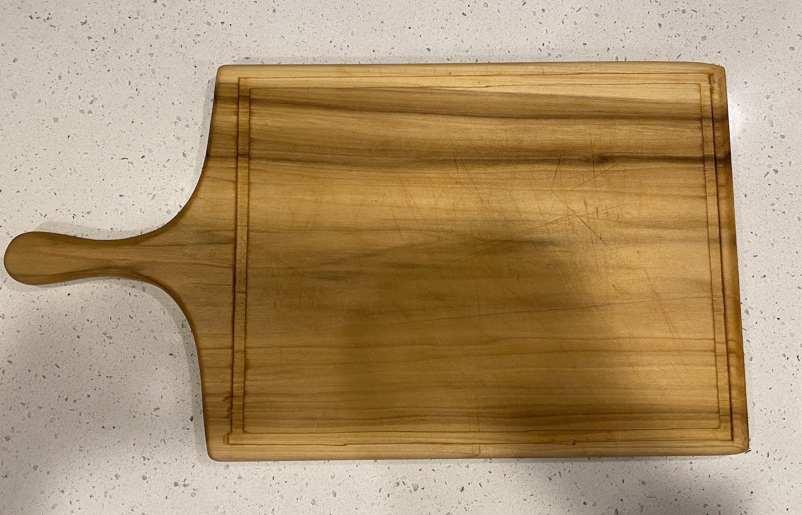

Paul Sellers
I would like to start by introducing our (Gavin and my) woodworking guru, Paul Sellers. Paul Sellers is a woodworker extraordinaire who specializes in hand tools woodworking. Most importantly to us, he is an excellent teacher who has been developing open source video tutorials of a wide range of woodworking projects for over a decade. His passion for passing on traditional woodworking skills and training the next generation of aspiring woodworkers is ever present throughout his tutorials. If that wasn’t enough, his calming lecturing style is a joy to watch on its own. Paul has a personal website, a one stop for his blog, videos, and tutorials. He also has a specific website, Woodworking Masterclasses, with video tutorials for each project, and another website, Common Woodworking, dedicated to providing detailed guides, exercises, and simple projects for developing your hand tool woodworking skills. Additionally, all of his free content can be found on his active YouTube channel.
So, my woodworking journey starts with a Paul Sellers tutorial for making cutting boards. It was a great first project that introduced me to some basic cutting and shaping skills. In full Paul fashion, his video tutorial was recorded outside complete with construction and traffic sounds.
The apartment woodshop
When I started woodworking, we were living in a 1 bedroom apartment in Seattle. We had a den that housed two desks and all our books. This was where we decided to put our little Black & Decker portable workmate to do our woodworking. We had large tarps that we hung over the bookshelves before we started any work to protect the books from sawdust. We had a make shift tool bench made out of long 2x4s balanced on buckets. Not the ideal woodshop but it worked and we loved it.



Making the cutting board
I used poplar to make the first cutting board since it is a cheaper wood and, well, this was my first project. I increased the dimensions slightly to make a larger board compared to what Paul makes in his video. Gavin and I like big cutting boards. I was introduced to four tools with this project: 1. coping saw, 2. spokeshave, 3. rasp, and 4. router plane.
The coping saw was fairly simple to get a hang of and useful for making curved cuts. The long end of the cutting board includes a handle, so I used the coping saw for the handle end of the board. The trick to getting a symmetric handle is to first cut one side and then use the cut piece to trace an outline for the other side. This produces a symmetric cut on either side of the midline. This piece of advice seemed so new to me at the time, but turns out there is a lot of tracing already cut pieces onto new boards to get exact dimensions and minimize errors.
The spokeshave on the other hand has a steep learning curve. It seemed like I was hacking at the wood when Paul looked like he was carving long shavings off the wood. Of course, I shouldn’t really compare myself to him even if I was an expert, but I can’t help it. Working with the spokeshave helped me learn about wood grain direction - how to identify it, how to shave with the grain, and even some tricks to deal with difficult grain.
The rasp was used to smooth out parts of the cutting board handle that the spokeshapve was unable to get to. The rasp is really good at removing large uneven cuts in the wood. However, it does leave big rasp marks that need to be sanded down pretty aggressively. The rasp was another tool that works really well if you get a hang of the grain direction. It is much more efficient in taking wood off evenly if you go with the grain, but can be frustrating when rasping against the grain.
To add a little touch of our own, we decided to add a groove along the edge of the cutting board. This included a fourth tool - the router plane. The router plane is useful for cutting small grooves of specific depth below the surface of any panel. To keep the router from veering off course we first built a knife wall with a box cutter. This certainly made it easier to follow a straight line and get a uniform groove on all four sides.
The final steps, after adding some curve to all the edges, was sanding and finishing. All the sanding was done by hand. I actually don’t mind sanding by hand for these smaller projects. It has a meditative feel to it. Once sanded, the board was finished with Tung oil, which is safe for wood that touches food.
Once we finished the first cutting board we made two additional boards with the intention of gifting but also as further practice with the spokeshave in particular. These boards did not have the additional grooves as they were smaller. The fun part about these boards was that we made them out of cherry wood. We decided to upgrade from poplar and acquired some cherry and maple wood for nicer projects. I loved how the cherry looked after finishing with Tung oil - too bad I didn’t take better pictures.


Notes
- The cutting boards were made jointly by Gavin and myself.